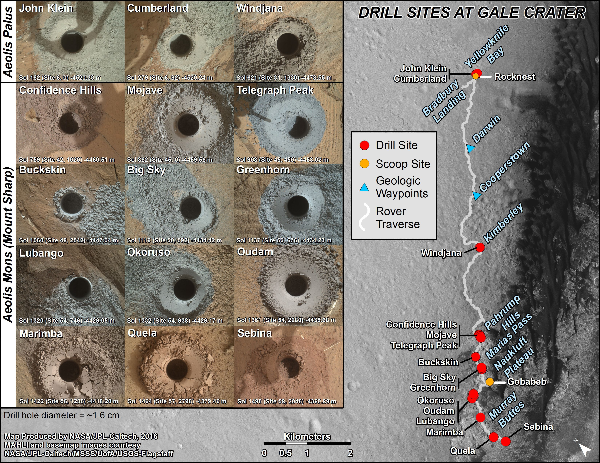

//The following set is for the grid on the left side of the image
//The following sets are for the travel map on the right side of the image //This second set matches exactly to the analyses in the grid on the left
//The second set contains the two scoop sites Rocknest and Gobabeb as detailed by the yellow dots
//The third set contains the two searchable analysis types: drill, or scoop
//The fourth set contains the locations as detailed by the travel map's red dots... or maybe this isn't feasible/necessary?